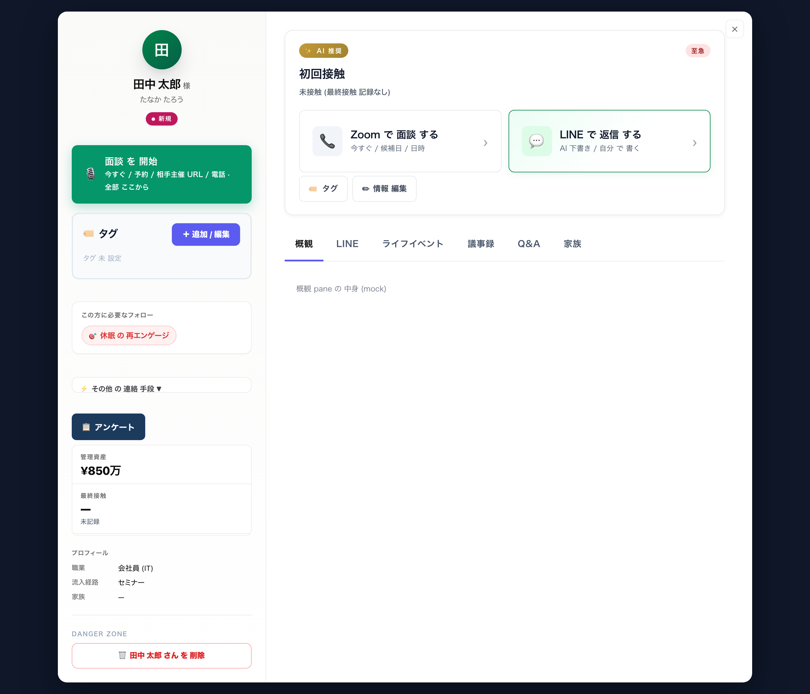

owner 「バランス 余白 全部 おかしい / 3個 の 位置 意味わからない / 再構築 しろ」 対応。 現状 の 問題 12 個 洗い出し + 2 方向 mockup で picks 前提 提示。
左 が 実 screenshot、 右 が 番号 付き で 問題 の 場所 と 内容。

2 column layout は 保つ、 section 全部 同じ padding · border-radius · font に 統一。 sheet は INLINE (flow area 内 で cards 下 に 展開) で 「意味わからない ところ」 fix。
2 column 廃止 で 幅 使い 切る。 上部 に コンパクト hero (avatar + name + 「面談 開始」 CTA) → tabs → main。 flow は tab の 中 (「概観」 tab に inline)。 sheet も inline。
案 A: Clean rebuild (2 column 維持、 spacing 統一、 sheet inline) — 変更 保守 的 · 実装 早い (半日)。 owner が 現行 の 情報 密度 を そのまま 欲しい 場合。
案 B: Single column (左 サイド 廃止、 hero + tabs + main の 3 層) — 抜本 変更 · 実装 1-2 日。 「もっと 広く 使いたい / モバイル 見やすい」 場合。
「A で」 「B で」 「A の xxx を B の yyy に」 「別 案 出せ」 の どれ か で picks。
決まったら 実装 (フライング 禁止 · picks 待ち)。 backend LINE push · P3 content variant も picks 揃い 次第 順次 進める。
FP Compass / 客モーダル 再構築 plan preview